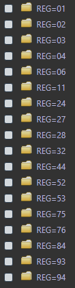

14 Lire et écrire des fichiers Parquet
14.1 Tâches concernées et recommandations
- L’utilisateur souhaite importer et exploiter dans
Rdes données stockées au format Parquet. - L’utilisateur souhaite convertir des données au format Parquet.
Tâche concernée et recommandation
Il est recommandé d’utiliser le format Parquet pour stocker des données volumineuses, car il est plus compact que le format csv. Le package
arrowpermet de lire, d’écrire simplement les fichiers au format Parquet avecR;-
Deux approches sont recommandées pour manipuler des données volumineuses stockées en format Parquet:
- les packages
arrowetdplyrsi vous maîtrisez la syntaxe tidyverse; - les packages
DBIetduckdbsi vous maîtrisez le langage SQL;
- les packages
Il est essentiel de travailler avec la dernière version d’
arrow, deduckdbet deRcar les packagesarrowetduckdbsont en cours de développement;Il est préférable d’utiliser la fonction
open_datasetpour accéder à des données stockées en format Parquet (plutôt que la fonctionread_parquet);Il est recommandé de partitionner les fichiers Parquet lorsque les données sont volumineuses et lorsque les données peuvent être partitionnées selon une variable cohérente avec l’usage des données (département, secteur, année…);
Lorsqu’on importe des données volumineuses, il est recommandé de sélectionner les observations (avec
filter) et les variables (avecselect) pour limiter la consommation de mémoire vive.
Note: cette fiche n’a pas vocation à être exhaustive sur le format Parquet, mais plutôt à lister les points saillants à retenir lorsqu’un statisticien souhaite travailler avec ce format de fichier.
14.2 Qu’est-ce que Parquet et pourquoi s’en servir?
14.2.1 Qu’est-ce que le format Parquet?
Parquet est un format de stockage de données, au même titre que les fichiers CSV, RDS, FST… Ce format n’est pas nouveau (création en 2013), mais il a gagné en popularité dans le monde de la data science au cours des dernières années, notamment grâce au projet open-source Apache arrow.
Le format Parquet présente plusieurs avantages cruciaux qui en font un concurrent direct du format csv:
- il compresse efficacement les données, ce qui le rend très adapté au stockage de données volumineuses;
- il est conçu pour être indépendant d’un logiciel: on peut lire des fichiers Parquet avec
R, Python, C++, JavaScript, Java… - il est conçu pour que les données puissent être chargées très rapidement en mémoire.
14.2.2 Caractéristiques du format Parquet
Le format Parquet présente trois caractéristiques importantes du point de l’utilisateur:
Parquet stocke les données en un format binaire. Cela signifie qu’un fichier Parquet n’est pas lisible par un humain: contrairement au format
csv, on ne peut pas ouvrir un fichier Parquet avec Excel, LibreOffice ou Notepad pour jeter un coup d’oeil au contenu.Parquet repose sur un stockage orienté colonne. Ainsi seront stockées dans un premier temps toutes les données de la première colonne de la table, puis seulement dans un second temps les données de la deuxième colonne et ainsi de suite… Le blog d’upsolver fournit une illustration pour bien visualiser la différence :
- Un fichier Parquet contient à la fois les données et des métadonnées. Ces métadonnées écrites à la fin du fichier enregistrent une description du fichier (appelé schéma). Ces métadonnées contiennent notamment le type de chaque colonne (entier/réel/caractère) et quelques statistiques (min, max). Ce sont ces métadonnées qui font en sorte que la lecture des données Parquet soit optimisée et sans risque d’altération (voir ici pour en savoir plus).
- Un fichier Parquet est composé de groupe de lignes (row group) contenant également des métadonnées similaires à celles du fichier. La taille idéale d’un row group est de l’ordre de 30 000 à 1 000 000.
Dans un contexte analytique, cette organisation des données génère plusieurs avantages dont les principaux sont:
-
Un gain de vitesse lors de la lecture des données pour un usage statistique:
Rpeut extraire directement les colonnes demandées sans avoir à scanner toutes les lignes comme ce serait le cas avec un fichiercsv; -
La possibilité d’avoir un haut niveau de compression. Le taux de compression moyen par rapport au format
csvest souvent compris entre 5 et 10. Pour des fichiers volumineux il est même possible d’avoir des taux de compression bien supérieurs.
Inversement, le format Parquet présente deux contraintes inhabituelles pour les utilisateurs des autres formats (CSV, SAS, FST…):
- Il n’est pas possible d’importer uniquement les 100 premières lignes d’un fichier Parquet (comme on peut facilement le faire pour un fichier CSV); en revanche, il est possible d’afficher les 100 premières lignes d’un fichier Parquet avec la commande:
open_dataset(mon_fichier_parquet) %>% head(100); - Il n’est pas possible d’ouvrir un fichier Parquet avec Excel, LibreOffice ou Notepad.
Pour en savoir plus notamment sur la comparaison entre les formats Parquet et csv, consultez le chapitre sur le sujet dans le cours de l’ENSAE “Python pour la data science”. Grâce aux travaux du projet Arrow, les fichiers aux format Parquet sont inter-opérables c’est-à-dire qu’ils peuvent être lus par plusieurs langages informatiques : C, C++, C#, Go, Java, JavaScript, Julia, MATLAB, Python, Ruby, Rust et bien entendu R. Le format Parquet est donc particulièrement adapté aux chaînes de traitement qui font appel à plusieurs langages (exemples: manipulation de données avec R puis machine learning avec Python).
S’il est très efficace pour l’analyse de données, Parquet est en revanche peu adapté à l’ajout de données en continu ou à la modification fréquente de données existantes.
Pour cette utilisation, le statisticien privilégiera un système de gestion de base de données comme par exemple PostgreSQL.
14.3 Écrire des fichiers Parquet
14.3.1 Données peu volumineuses: écrire un seul fichier Parquet
Les tables Parquet sont encore loin d’être majoritaires dans les liens de téléchargement notamment face au format csv. C’est la raison pour laquelle, nous allons dans cette section dérouler le processus pour obtenir un fichier Parquet à partir d’un fichier csv.
Dans un premier temps, on importe le fichier plat avec la fonction fread() du package data.table, conformément aux recommandations de la fiche sur les imports de fichiers plats. On obtient un objet data.table en mémoire. Dans un second temps, on exporte ces données en format Parquet avec la fonction write_parquet() du package arrow.
library(data.table)
library(magrittr)
library(arrow)
# Création du dossier "Data_parquet"
dir.create("Data_parquet")
# Téléchargement du fichier zip
download.file("https://www.insee.fr/fr/statistiques/fichier/2540004/dpt2021_csv.zip",
destfile = "Data_parquet/dpt2021_csv.zip")
# Décompression du fichier zip
unzip("Data_parquet/dpt2021_csv.zip", exdir = "Data_parquet")
# Lecture du fichier CSV
dpt2021 <- fread("Data_parquet/dpt2021.csv")
# Écriture des données en format Parquet
write_parquet(
x = dpt2021,
sink = "Data_parquet/dpt2021.parquet"
)À l’issue de cette conversion, on peut noter que le fichier Parquet créé occupe un espace de stockage 10 fois moins important que le fichier csv initial (7,4 Mo contre 76,3 Mo) !
Pour les exemples qui suivent dans cette fiche, on utilise un fichier de la Base Permanente des Équipements de l’Insee que l’on va convertir au format Parquet.
Vous pouvez télécharger ce fichier avec le package doremifasol et plus particulièrement la fonction telechargerDonnees() :
# remotes::install_github("InseeFrLab/doremifasol", build_vignettes = TRUE)
library(doremifasol)
library(arrow)
# Téléchargement des données de la BPE
donnees_BPE <- telechargerDonnees("BPE_ENS", date = 2021)
# Éecriture des données sous format Parquet
write_parquet(
x = donnees_BPE,
sink = "Data_parquet/BPE_ENS.parquet"
)14.3.2 Données volumineuses: écrire un fichier Parquet partitionné
Le package arrow présente une fonctionnalité supplémentaire qui consiste à créer et lire un fichier Parquet partitionné. Le partitionnement des fichiers Parquet présente des avantages pratiques qui sont expliqués dans la suite de cette fiche (voir partie Lire et exploiter un fichier Parquet avec R).
Partitionner un fichier revient à le “découper” selon une clé de partitionnement, qui prend la forme d’une ou de plusieurs variables. Cela signifie en pratique que l’ensemble des données sera stockée sous forme d’un grand nombre de fichiers Parquet (un fichier par valeur des variable de partitionnement). Par exemple, il est possible de partitionner un fichier national par département: on obtient alors un fichier Parquet par département.
Tip
- Il est important de bien choisir les variables de partitionnement d’un fichier Parquet. Il faut choisir des variables faciles à comprendre et qui soient cohérentes avec l’usage des données (année, département, secteur…). En effet, un partitionnement bien construit induit par la suite des gains d’efficacité sur les traitements et facilite la maintenance du fichier sur le long terme.
- Il est inutile de partitionner des données de petite taille. Si les données dépassent quelques millions d’observations et/ou si leur taille en CSV dépasse quelques giga-octets, il est utile de partitionner.
- Il ne faut pas partitionner les données en trop de fichiers. En pratique, il est rare d’avoir besoin de plus d’une ou deux variables de partitionnement.
-
Si vous souhaitez être compatible avec tous les outils lisant du parquet, il est recommandé de ne pas partitionner sur une variable pouvant être
NAou une chaîne vide.
Pour créer des fichiers Parquet partitionnés, il faut utiliser la fonction write_dataset() du package arrow. Voici ce que ça donne sur le fichier de la BPE :
write_dataset(
dataset = donnees_BPE,
path = "Data/",
partitioning = c("REG"), # la variable de partitionnement
format="parquet"
)Avec cette instruction, on a créé autant de répertoires que de modalités différentes de la variable REG. Vous pouvez noter la structure des dossiers nommés REG==[valeur].

14.3.3 Données volumineuses: optimiser en triant
Il n’est pas toujours possible ou souhaitable de partitionner un fichier si la variable de partitionnement possède de trop nombreuses modalités (si celle-ci est non discrète ou possède des milliers de modalités…). Dans ces cas là, vous pouvez trier le fichier par la variable à utiliser, cela va permettre une recherche efficace à partir des métadonnées des fichiers et des groupes de lignes.
donnees_BPE |>
arrange(EPCI) |>
write_parquet(
sink = "Data_parquet/BPE_ENS.parquet"
)Vous pouvez bien sûr cumuler les partitions avec des tris :
donnees_BPE |>
arrange(EPCI) |>
write_dataset(
path = "Data/",
partitioning = c("REG"), # la variable de partitionnement
format="parquet"
)Cette méthode est quasiment aussi efficace que le partitionnement.
14.3.4 Vérifier qu’un fichier parquet est correctement optimisé
Dans certains cas pathologiques quand vous manipulez de très gros volumes de données (par exemple quand vous partitionnez avec arrow::open_dataset un volume de données de plusieurs de dizaine de millions de lignes), le package arrow peut générer des fichiers parquet avec un nombre de lignes par row group très petite (inférieur à 1000 voire à 100). Cela rendra toutes les requêtes sur vos fichiers extrèmement lent.
Pour vérifier que vos fichiers ont une taille de row group correcte, vous pouvez utiliser la fonction suivante :
library(arrow)
mean_row_group_size <- function(path) {
a <- arrow::ParquetFileReader$create(path)
(a$num_rows / a$num_row_groups)
}
mean_row_group_size('bpe2018/REG=11/part-0.parquet')Vous devez obtenir une valeur au moins égale à 10 000. Si vous obtenez une valeur inférieure, vous aurez intérêt à regénérer votre fichier en passant par d’autres méthodes (par exemple générer chaque partition en faisant une boucle et un filtre).
14.4 Lire et exploiter un fichier Parquet avec R
14.4.1 Cas des données peu volumineuses: importer les données en mémoire
La méthode présentée dans cette section est valable uniquement pour les fichiers peu volumineux. Elle implique en effet d’importer l’intégralité d’un fichier Parquet dans la mémoire vive de votre espace de travail avant de pouvoir travailler dessus. Il est possible d’effectuer des requêtes plus efficacement sur des fichiers Parquet. Pour cette raison, il est conseillé d’utiliser la fonction open_dataset (présentée plus bas) pour accéder à des données stockées en format Parquet, plutôt que la fonction read_parquet.
La fonction read_parquet() du package arrow permet d’importer des fichiers Parquet dans R. Elle possède un argument très utile col_select qui permet de sélectionner les variables à importer (par défaut toutes). Cet argument accepte soit une liste de noms de variables, soit une expression dite de tidy selection issue du tidyverse.
Pour utiliser read_parquet(), il faut charger le package arrow :
library(arrow)
donnees <- arrow::read_parquet("Data/BPE_ENS.parquet")- Exemple en ne sélectionnant que quelques variables à l’aide d’un vecteur de caractères :
donnees <- arrow::read_parquet(
"Data/BPE_ENS.parquet",
col_select = c('AN','REG','DEP','SDOM','TYPEQU','NB_EQUIP')
) - Exemple en ne sélectionnant que quelques variables à l’aide d’une
tidy selection:
donnees <- arrow::read_parquet(
"Data/BPE_ENS.parquet",
col_select = starts_with("DEP")
) Dans les trois cas, le résultat obtenu est un objet directement utilisable dans R.
14.4.2 Cas des données volumineuses: utiliser des requêtes dplyr
Il arrive fréquemment que la méthode proposée dans la section précédente ne puisse pas être appliquée, car les données que l’on souhaite exploiter sont trop volumineuses pour être importées dans la mémoire vive dont on dispose. Par exemple, le fichier des données du recensement de la population 1968-2019 fait 3,2 Go et contient plus de 51,5 millions de lignes et 18 colonnes, ce qui est difficile à importer sur un ordinateur standard.
Les packages arrow et dplyr proposent une approche qui permet de traiter ces données très volumineuses sans les charger dans la mémoire vive. Cette approche nécessite de charger les packages arrow et dplyr et comprend trois étapes:
- On crée une connexion au fichier Parquet avec la fonction
open_dataset(): comme la fonctionread_parquet(), elle ouvre le fichier Parquet, mais elle n’importe pas les données contenues dans le fichier; - On définit une chaîne de traitement (ou requête) avec la syntaxe du tidyverse (voir la fiche Manipuler des données avec le
tidyverse). Consultez cette page pour accéder à la liste des verbes issus du tidyverse connus pararrow; - On termine la requête avec la fonction
collect(), qui indique àRque l’on souhaite récupérer le résultat de la requête sous forme d’undata.frame.
Voici un exemple avec une table peu volumineuse :
library(dplyr)
library(arrow)
# Établir la connexion aux données
donnees_BPE <- open_dataset("Data/BPE_ENS.parquet")
# Définir la requête
requete <- donnees_BPE |>
filter(REG == "76") |>
group_by(DEP) |>
summarise(nb_equipements_total = SUM(NB_EQUIP))
# Récupérer le résultat sous forme d'un data.frame
resultat <- requete |> collect()Avec cette syntaxe, la requête va automatiquement utiliser les variables du fichier Parquet dont elle a besoin (en l’occurence REG, DEP et NB_EQUIP) et minimiser l’occupation de la mémoire vive.
- Exemple avec une table volumineuse (Recensements 1968-2019, suivre ce lien pour obtenir le code qui permet de générer “Ficdep19.parquet” de façon reproductible) :
# Attention ce morceau de code n'est pas reproductible,
# Il faut suivre le lien dans le texte pour reconstruire le fichier de données
library(dplyr)
# Établir la connexion aux données
donnees_Ficdep19 <- open_dataset("Data/Ficdep19.parquet")
# Définir la requête
requete2 < - donnees_Ficdep19 |>
filter(DEP_RES_21 == "11") |>
group_by(SEXE) |>
summarise(total = sum(pond)) |>
collect()
# Récupérer le résultat sous forme d'un data.frame
resultat2 <- requete2 |> collect()Cette instruction s’exécute sur un ordinateur standard en quelques secondes.
Note
Les packages arrow et duckdb présentent une grande différence avec les packages standard de manipulation de données comme dplyr ou data.table: lorsqu’on exécute une requête sur une table de données, ces packages ne se contentent pas d’exécuter les commandes une à une, dans l’ordre du code, mais analysent le code pour optimiser le plan d’exécution de la requête. En pratique, cela signifie qu’arrow et duckdb essaient de n’importer que les observations nécessaires à la requête, de ne conserver que les colonnes nécessaires au calcul, etc. C’est cette optimisation du plan d’exécution (appelée predicate push-down) qui permet d’accélérer les traitements et de réduire la consommation de ressources informatiques.
14.5 Lire et exploiter un fichier Parquet partitionné
14.5.1 Quel est l’intérêt d’utiliser des fichiers Parquet partitionnés?
Comme indiqué précédemment, les packages arrow et duckdb ne se contentent pas d’exécuter les instructions de la requête une à une, dans l’ordre du code, mais analysent la requête dans son ensemble pour optimiser le plan d’exécution de la requête. Toutefois, il n’est pas possible de charger seulement quelques lignes d’un fichier Parquet: on importe nécessairement des colonnes entières. C’est principalement sur ce point qu’utiliser un fichier Parquet partitionné facilite ce travail d’optimisation du plan d’exécution. En effet, lorsque le fichier Parquet est partitionné, arrow est capable de filtrer les lignes à importer à l’aide des clés de partitionnement, ce qui permet d’accélérer l’importation des données.
Exemple : imaginons que la Base Permanente des Équipements soit stockée sous la forme d’un fichier Parquet partitionné par région (REG), et qu’on veuille compter le nombre d’équipements de chaque type dans chaque département de la région Hauts-de-France (REG == "32"). On utilisera le code suivant:
# Établir la connexion au fichier Parquet partitionné
donnees_BPE_part <- open_dataset(
"Data/",
partitioning = arrow::schema(REG = arrow::utf8())
)
# Définir la requête
requete_BPE <- donnees_BPE_part |>
filter(REG == "32") %>% # Ici, on filtre selon la clé de partitionnement
select(DEP, TYPEQU, NB_EQUIP) %>%
group_by(DEP, TYPEQU) %>%
summarise(nb_equipements = sum(NB_EQUIP))
# Récupérer le résultat sous forme d'un data.frame
resultat_BPE <- requete_BPE |> collect()Au moment d’exécuter cette requête, arrow va utiliser la variable de partitionnement pour ne lire que la partie REG == "32" du fichier partitionné (donc seulement une partie des observations). Autrement dit, le fait que le fichier Parquet soit partitionné accélère la lecture des données.
En conclusion, l’utilisation des fichiers Parquet partitionné présente deux avantages :
- Elle permet de travailler sur des fichiers Parquet de plus petite taille et de consommer moins de mémoire vive;
- Elle fait gagner du temps dans l’exécution des requêtes sur les fichiers volumineux (par rapport à un fichier Parquet unique).
14.5.2 Comment bien utiliser les fichiers Parquet partitionnés?
14.5.2.1 Avec le package
arrowLa fonction
open_dataset()permet d’ouvrir une connexion vers un fichier Parquet partitionné. L’utilisation de la fonctionopen_dataset()est similaire au cas dans lequel on travaille avec un seul fichier Parquet. Il y a toutefois deux différences:.parquet, mais le chemin d’un répertoire, dans lequel se trouve le fichier Parquet partitionné;Une fois que la connexion est établie avec le fichier partitionné, il est possible de l’utiliser exactement comme s’il s’agissait d’un seul fichier Parquet. Voici un exemple de code:
Pour bien utiliser un fichier Parquet partitionné, il est recommandé de suivre les deux conseils suivants:
partitioning. Cela évite des erreurs typiques: le code du département est interprété à tort comme un nombre et aboutit à une erreur à cause de la Corse… L’argumentpartitionings’utilise en construisant un schéma qui précise le type de chacune des variables de partitionnement:Les types les plus fréquents sont: nombre entier (
int8(),int16(),int32(),int64()), nombre réel (float(),float32(),float64()), et chaîne de caractère (utf8(),large_utf8()). Il existe beaucoup d’autres types, vous pouvez en consulter la liste en exécutant?arrow::floatou en consultant cette page.arrowà utiliser plusieurs processeurs à la fois, ce qui accélère les traitements: